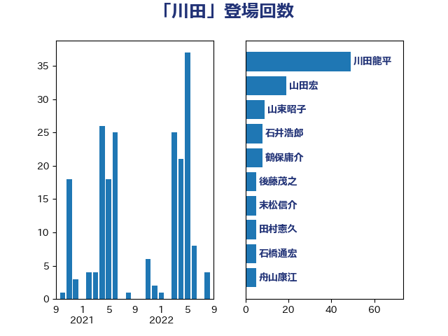

単語「川田」

| 川田龍平 | 立憲民主党 | 49 回 |
| 山田宏 | 自由民主党 | 19 回 |
| 山東昭子 | 自由民主党 | 9 回 |
| 石井浩郎 | 自由民主党 | 8 回 |
| 鶴保庸介 | 自由民主党 | 8 回 |
| 後藤茂之 | 自由民主党 | 5 回 |
| 末松信介 | 自由民主党 | 5 回 |
| 田村憲久 | 自由民主党 | 5 回 |
| 石橋通宏 | 立憲民主党 | 5 回 |
| 舟山康江 | 国民民主党 | 5 回 |
| 野田国義 | 立憲民主党 | 5 回 |
| 山本順三 | 自由民主党 | 4 回 |
| 石垣のりこ | 立憲民主党 | 4 回 |
| 小沢雅仁 | 立憲民主党 | 3 回 |
| 梅村聡 | 日本維新の会 | 3 回 |
| 羽田次郎 | 立憲民主党 | 3 回 |
| 芳賀道也 | 国民民主党 | 3 回 |
| 萩生田光一 | 自由民主党 | 3 回 |
| 山田俊男 | 自由民主党 | 2 回 |
| 田村まみ | 国民民主党 | 2 回 |
| 音喜多駿 | 日本維新の会 | 2 回 |
| 古川俊治 | 自由民主党 | 1 回 |
| 吉田忠智 | 立憲民主党 | 1 回 |
| 小山展弘 | 立憲民主党 | 1 回 |
| 山本博司 | 公明党 | 1 回 |
| 山田勝彦 | 立憲民主党 | 1 回 |
| 岸田文雄 | 自由民主党 | 1 回 |
| 岸真紀子 | 立憲民主党 | 1 回 |
| 斉藤鉄夫 | 公明党 | 1 回 |
| 新妻秀規 | 公明党 | 1 回 |
| 松野博一 | 自由民主党 | 1 回 |
| 柳ヶ瀬裕文 | 日本維新の会 | 1 回 |
| 森屋隆 | 立憲民主党 | 1 回 |
| 橋本岳 | 自由民主党 | 1 回 |
| 武田良太 | 自由民主党 | 1 回 |
| 熊野正士 | 公明党 | 1 回 |
| 田島麻衣子 | 立憲民主党 | 1 回 |
| 田村貴昭 | 日本共産党 | 1 回 |
| 矢倉克夫 | 公明党 | 1 回 |
| 石井苗子 | 日本維新の会 | 1 回 |
| 福島みずほ | 社会民主党 | 1 回 |
| 自見はなこ | 自由民主党 | 1 回 |
| 舩後靖彦 | れいわ新選組 | 1 回 |
| 菅義偉 | 自由民主党 | 1 回 |
| 野村哲郎 | 自由民主党 | 1 回 |
| 野田聖子 | 自由民主党 | 1 回 |
| 阿達雅志 | 自由民主党 | 1 回 |
| 高橋はるみ | 自由民主党 | 1 回 |
| 高橋千鶴子 | 日本共産党 | 1 回 |
| 麻生太郎 | 自由民主党 | 1 回 |